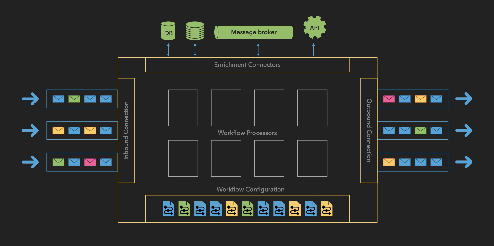

How It Works: Operational Flow
The Message Processor follows a systematic workflow that ensures reliable, secure processing of payment messages. Here's a detailed breakdown of each stage:

1. Inbound Connection
-
Message Reception
- Accepts incoming messages from multiple sources:
- Bank APIs
- Financial gateways
- External systems
- Validates message format and structure
- Assigns unique transaction identifier
- Accepts incoming messages from multiple sources:
-
Queue Management
- Places messages in inbound queue
- Maintains message priority
- Ensures ordered processing
2. Workflow Processor
-
Message Retrieval
- Pulls messages from inbound queue
- Maintains processing order
- Manages throughput based on system capacity
-
Workflow Selection
- Matches messages to appropriate workflows based on:
- Payment type
- Originator
- Geographic region
- Message attributes
- Retrieves workflow definition from storage
- Matches messages to appropriate workflows based on:
3. Workflow Execution
The system processes messages through a flexible combination of:
- Enrichment tasks
- Validation processes
- Transformation operations
These steps can be repeated and reordered based on workflow requirements.
4. Error Management
-
Error Detection
- Monitors processing steps
- Identifies validation failures
- Catches system errors
- Flags data inconsistencies
-
Recovery Procedures
- Implements retry logic for transient errors
- Routes to error queue when needed
- Enables manual intervention
- Maintains processing state
5. Outbound Processing
-
Message Dispatch
- Routes to designated endpoints
- Supports multiple destinations
- Ensures secure transmission
- Verifies delivery
-
Confirmation Handling
- Processes acknowledgments
- Updates transaction status
- Maintains delivery records
- Handles failed deliveries